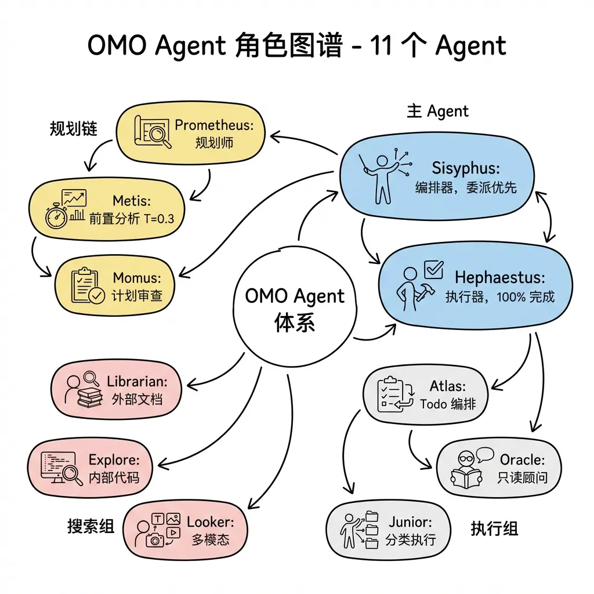
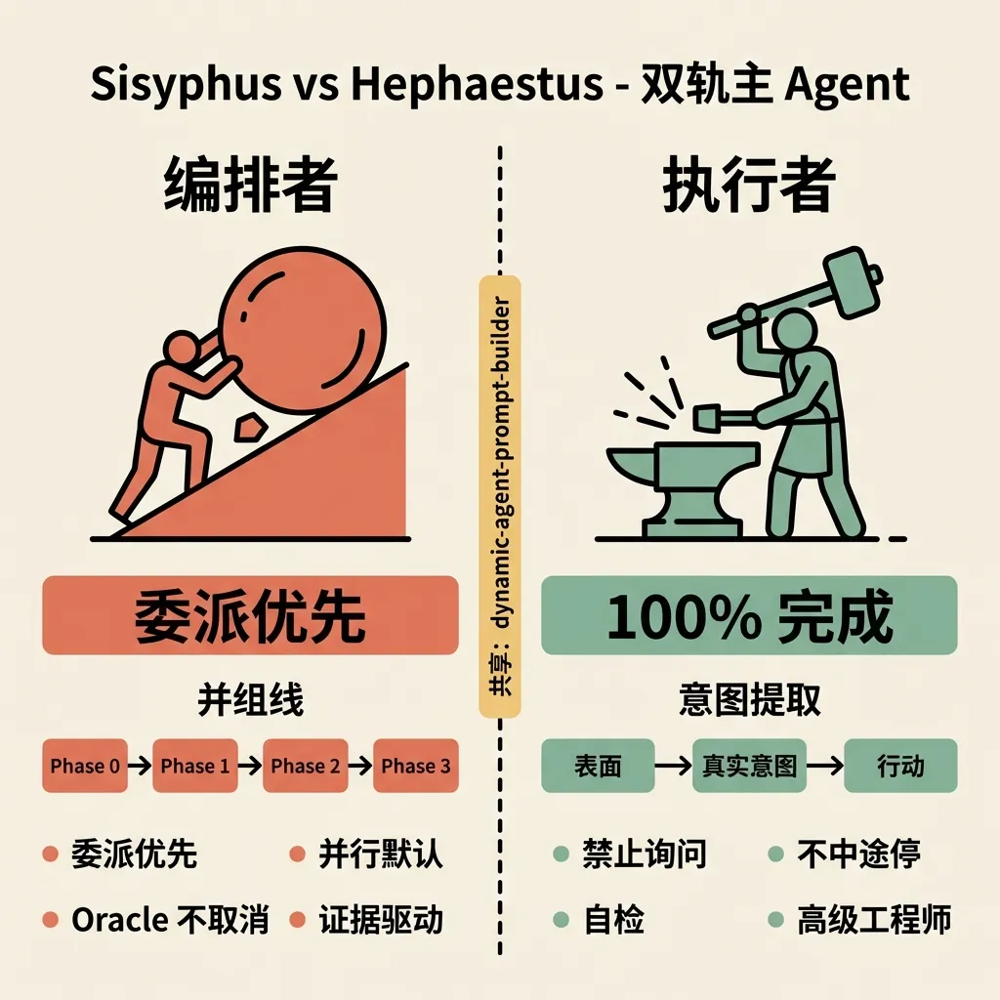

Agentic Coding：从工具到团队的范式跃迁
AI 编程工具的演进，正在经历一次根本性的范式转变：从"补全光标处的代码"，到"自主完成端到端工程任务"。这种转变有一个专有名词——Agentic Coding。
理解这个转变，需要从三个层面展开：工具层（OpenCode 的能力边界）、框架层（多 Agent 协作编排）、方法论层（如何让 Agent 真正服务于工程流程）。
什么是 Agentic Coding
传统 AI 编程助手的工作模式是响应式的：开发者提问，AI 回答；开发者选中代码，AI 补全。人始终是执行者，AI 是辅助工具。
Agentic Coding 的工作模式是自主式的：开发者描述目标，Agent 自主规划步骤、调用工具、执行操作、验证结果，直到任务完成。人退出执行循环，成为目标定义者和结果审查者。
这不是量变，是质变。一个能够自主编码的 Agent，需要具备：
- 代码理解能力：不只是文本匹配，而是理解代码的语义结构、类型关系、调用链路
- 工具调用能力：读写文件、执行命令、调用外部 API
- 规划与反馈能力：将大任务分解为步骤，根据执行结果调整计划
- 上下文管理能力：在有限的上下文窗口内，按需加载相关信息
其中，代码理解能力是基础，也是工具层最关键的差异点。关于代码理解能力的核心——LSP（语言服务协议），已在独立文章 LSP：语言服务协议与AI编程助手的代码理解能力 中详细阐述。
从单 Agent 到 Agent 团队
OpenCode 解决了单个 Agent 的代码理解问题。但工程任务的复杂度，往往超出单个 Agent 的能力边界。
理解这个边界在哪里，是理解为什么需要多 Agent 的前提。一个单独的 Agent，即便配备了 LSP 和完整的工具权限，仍然面临三个结构性限制：上下文窗口有限（无法同时持有整个大型项目的全貌）、角色混淆（规划者和执行者是同一个 Agent，容易在"想清楚"和"动手做"之间反复横跳）、无法真正并行（单线程的问答流水线，无法同时搜索文档和修改代码）。
这些限制不是模型能力的问题，而是单 Agent 架构的天花板。突破它，需要引入外部编排层——把规划、执行、验证拆给不同的角色，让它们并行工作、相互制衡。这正是本文后续要讨论的核心：从 Ralph Loop 的上下文重置机制，到 OMO 的多 Agent 团队，再到企业级框架的业务域知识注入，每一层都在回答同一个问题：如何让 Agent 团队像真正的工程团队一样协作。
编程 Agent 的本质
在讨论任何具体的 Agent 工具或框架之前，有必要先把"编程 Agent 到底是什么"这个问题说清楚。理解了本质，才能理解为什么各种框架要做它们做的事。
一个编程 Agent，剥去所有包装，本质上是四个要素的组合：
while loop：Agent 不是一次性的问答，而是一个持续运行的循环。每一轮循环，Agent 观察当前状态、决定下一步行动、执行行动、再观察新状态。循环在何时退出，取决于完成信号的检测——可以是文件中的特定标记（如 DONE），可以是测试通过，也可以是外部脚本的判断。
system prompt：Agent 的"人格"和"职责"由 system prompt 定义。它告诉 Agent：你是谁、你的目标是什么、你能用哪些工具、你应该遵守哪些约束。system prompt 是 Agent 行为的根本来源——同一个底层模型，配上不同的 system prompt，就变成了完全不同的 Agent。这也是为什么多 Agent 框架的核心工作，往往是精心设计每个角色的 system prompt，而非替换底层模型。
tool calling：Agent 通过工具与外部世界交互。读文件、写文件、执行 Shell 命令、调用 API——这些都是工具。工具调用是 Agent 从"思考"到"行动"的桥梁。没有工具，Agent 只能输出文本；有了工具，Agent 才能真正改变世界的状态。
persistent state（文件系统）：Agent 的记忆不在上下文里，而在文件系统中。代码文件、任务列表、中间结果——这些都是持久化的状态。文件系统是 Agent 跨轮次、跨会话保持连贯性的基础。这也是为什么 Agent 框架普遍依赖文件来传递状态：task.md、boulder.json、.sisyphus/plans/——本质上都是在用文件系统弥补上下文窗口的有限性。
1 | |
理解了这四个要素，后续所有框架的设计决策都会变得清晰：Ralph Loop 是在 while loop 上做文章（外部脚本驱动循环、进程级重置上下文）；OMO 是在 system prompt 上做文章（精心设计多角色提示词、用 Hook 机制强制注入）；企业级框架是在 persistent state 上做文章（业务域知识注入、记忆湖）。
在深入这些编排框架之前，有必要先把 OpenCode 本身的能力边界说清楚——知道工具层能做什么、不能做什么，才能理解为什么需要在它之上叠加框架层。
裸 OpenCode 的能力边界
OpenCode 是一个开源的终端 AI 编程 Agent，支持 GPT-4/5 系列、Claude 等多种模型（通过界面切换模型），内置四个角色：
| Agent | 类型 | 能力 |
|---|---|---|
| Build | 主 Agent | 全工具权限，默认开发模式 |
| Plan | 主 Agent | 只读分析，禁止文件修改 |
| General | 子 Agent | 通用研究与多步骤任务 |
| Explore | 子 Agent | 只读代码库探索，快速搜索 |
值得注意的是，表格中 General 和 Explore 被标注为"子 Agent"，但这只是描述它们在 OpenCode 默认工作流中的调用关系，而非能力限制。它们本身是完整的 Agent，拥有独立的上下文和工具权限，完全可以作为主 Agent 直接使用。"子 Agent"是关系描述，不是能力描述——关于这一点的深入分析，见《子 Agent 的本质：上下文隔离与专门化》。
Plan 与 Build：模式切换，而非 Agent 切换
在 OpenCode 的终端界面中，按 Tab 键可以在 Plan 模式和 Build 模式之间切换。切换的是同一个 Agent 的工具权限集，而不是切换到另一个独立的 Agent。底层调用的是同一个 LLM，区别仅在于工具白名单：
- Plan 模式：只读权限。Agent 可以读文件、搜索代码库、分析调用链，但禁止写文件和执行命令。这一限制强迫 Agent 只思考、不动手，输出分析报告和行动计划。
- Build 模式：全工具权限。Agent 可以读写文件、执行 Shell 命令、调用外部 API。
分离两种模式的核心原因是防止 Agent 在理解不充分时就开始修改代码。Plan 模式提供了一个只读沙箱，让 Agent 先把问题想清楚。一个实用的工作流是：先用 Plan 模式分析代码库、理解依赖关系、输出修改方案；人类确认方案合理后，再切换到 Build 模式执行。
OpenCode 的 Skills 机制（SKILL.md 文件）实现了"渐进式披露"的上下文管理——Agent 只在需要时才加载技能的完整内容，而不是一次性把所有知识塞进上下文。这与 AI Agent 领域的上下文最小化原则高度吻合：
“The model should only know what it needs to know to make the next immediate decision.”
裸 OpenCode 的天花板
裸 OpenCode 有比较明确的能力边界：
- 并不以内置并发编排为核心体验：子 Agent 可以被调用，但原生形态下并没有像外部编排框架那样，把并行调度作为主工作流来强调
- 无角色分工体系：Build 和 Plan 是模式切换，而非职责分明的团队角色
- 无跨会话状态持久化：每次会话独立，无法在多天的复杂项目中保持进度
- 无业务域知识：工具是通用的，不理解特定团队的技术栈、部署流程、业务规则
裸 OpenCode 是一把锋利的瑞士军刀，但尚未构成一支完整的工程团队。突破这些限制，需要在 OpenCode 之上引入外部编排层。
命令与配置：从单工具到可编排工作流
如果只把 OpenCode 当作一个终端里的编码助手，那么 /init、/undo、/redo、/share 这些内置命令，更多是在提升单个会话的可用性。但当工作流开始延伸到 OMO 这种多 Agent 编排层时，这些命令的意义就变了：它们不再只是“方便操作”，而是在为后续的自动化协作准备上下文、状态和回退能力。
其中最值得关注的是两类能力：
- 项目知识初始化：例如
/init与/init-deep，负责把代码库的结构、规范和目录知识沉淀成可供 Agent 读取的配置文件； - 会话控制与工作流命令：例如
/undo、/redo、/share，以及 OMO 扩展出的/ralph-loop、/refactor、/start-work，负责把“单次回答”变成“可持续推进、可回退、可验证的工程过程”。
先看 OpenCode 自带的基础命令：
| 命令 | 功能 | 使用场景 |
|---|---|---|
/init |
生成项目 AGENTS.md | 新项目初始化 |
/undo |
撤销上一条消息和文件变更 | AI 改错了，想回退 |
/redo |
重做已撤销的操作 | 撤销后想恢复 |
/share |
生成会话分享链接 | 需要分享对话给他人 |
/help |
显示帮助信息 | 忘记命令用法 |
/undo 与 /redo：安全的迭代探索
这两个命令构成了 OpenCode 的"时间旅行"机制。
工作原理（以下 ASCII 图为摘要，展示三步操作的状态变化）：
1 | |
注意事项：
/undo和/redo依赖 OpenCode 内部的会话状态追踪，在 Git 仓库中效果最佳- 文件变更会被完整恢复（包括删除的文件）
- 可以连续执行多次
/undo回退多步
/share：会话分享
1 | |
分享链接包含完整的对话历史和代码变更，适合：
- 向同事展示解决方案
- 提交 Bug 报告时附上复现步骤
- 记录学习过程
OMO 内置命令详解
OMO（Oh My OpenAgent，原名 Oh My OpenCode）在 OpenCode 基础上扩展了一组更偏"工作流模板"的斜杠命令。它们的价值不只在于省输入，而在于把原本需要人手动维持的节奏——规划、循环、重构、收尾——固定成可重复执行的流程。
| 命令 | 功能 | 复杂度 |
|---|---|---|
/init |
生成根目录 AGENTS.md（OpenCode 原生，OMO 继承） | 低 |
/init-deep |
生成层级化 AGENTS.md 知识库 | 中 |
/ralph-loop |
自引用开发循环，持续工作直到完成 | 高 |
/ulw-loop |
Ultrawork 版本的 ralph-loop | 高 |
/cancel-ralph |
取消活跃的 Ralph Loop | 低 |
/refactor |
智能重构，完整工具链验证 | 高 |
/start-work |
从 Prometheus 计划开始工作 | 中 |
/init：OpenCode 原生的项目引导
/init 是 OpenCode 的内置命令，用于为项目创建 AGENTS.md 配置文件。
解决的问题：Agent 需要理解项目结构、技术栈、编码规范才能高效工作。每次新项目都要从零开始学习，效率低下。
工作原理（以下 ASCII 图为摘要，展示扫描→生成的主干流程；各分支的详细说明见下方文字）：
1 | |
使用方式：
1 | |
关键特性：
- 只生成根目录文件：
/init只在项目根目录生成一个AGENTS.md - 增量更新：如果文件已存在，会保留原有内容并补充新信息
- Git 友好：生成的文件应该提交到版本控制，供团队共享
/init-deep：层级化知识库
/init-deep 是 OMO 扩展的命令，在 /init 的基础上实现了层级化的知识库生成。
解决的问题：大型项目结构复杂，单一根目录的 AGENTS.md 无法承载所有模块的细节。Agent 在处理特定模块时，需要该模块级别的上下文。
工作原理（以下 ASCII 图为摘要，展示并行分析→层级生成的主干流程）：
1 | |
使用方式：
1 | |
层级化知识库的价值：
| 层级 | 作用 | 示例内容 |
|---|---|---|
根目录 AGENTS.md |
项目全局视图 | 技术栈、整体架构、部署流程 |
模块级 AGENTS.md |
模块专属知识 | 该模块的 API、依赖关系、设计模式 |
子模块级 AGENTS.md |
细节实现 | 具体函数的用法、边界情况处理 |
与 /init 的对比：
| 维度 | /init（OpenCode 原生） |
/init-deep（Oh My OpenAgent） |
|---|---|---|
| 生成范围 | 仅根目录 | 根目录 + 所有关键子目录 |
| 知识粒度 | 项目级 | 项目级 + 模块级 + 子模块级 |
| 上下文精度 | 粗粒度 | 细粒度，按需加载 |
| 适用场景 | 小型项目、单模块项目 | 大型项目、多模块项目 |
| Token 消耗 | 低 | 中等（但按需加载，不一次性全部读入） |
最佳实践：
- 新项目首次使用：先用
/init-deep建立完整知识库 - 定期更新：当项目结构有重大变化时重新运行
- Git 提交：将所有
AGENTS.md文件提交到版本控制 - 增量更新：默认模式会保留已有内容，避免覆盖人工补充的知识
/ralph-loop：持续工作直到完成
这是 OMO 中最有代表性的命令之一，实现了"自引用开发循环"。
核心机制（以下 ASCII 图为摘要，展示循环的主干结构；循环与 OMO 多 Agent 模式的关系见后续"能力层 vs 循环层"小节）：
1 | |
使用方式：
1 | |
关键参数：
| 参数 | 默认值 | 说明 |
|---|---|---|
--completion-promise |
DONE |
Agent 输出该标记表示任务完成 |
--max-iterations |
100 |
最大迭代次数，防止无限循环 |
适用场景：
- 复杂的多步骤任务（重构大型模块）
- 需要多次迭代才能完成的功能开发
- Bug 修复（可能需要多次尝试不同方案）
设计哲学：能力层 vs 循环层
一个常见的困惑是：既然界面已经选择了 Sisyphus (Ultraworker) 模式，Agent 已经可以自行多步操作，为什么还需要 /ralph-loop 和 /ulw-loop？
答案在于两者解决的是不同层面的问题：
| 概念 | 解决的问题 | 行为特点 |
|---|---|---|
| Sisyphus (Ultraworker) | “代理能力” | 多代理编排、能多步执行、能并行探索 |
/ralph-loop /ulw-loop |
“代理纪律” | 强制循环验证、防止假完成、必须满足停止条件 |
能力层（Sisyphus/Ultraworker） 解决的是"Agent 能不能做这件事"——它提供多代理编排、并行调度、工具调用等能力。但有能力不代表有纪律。一个有能力执行多步的 Agent，仍可能在第一次响应时就声称"我完成了"，或者跳过验证环节直接结束。
循环层（ralph-loop/ulw-loop） 解决的是"Agent 会不会假完成"——它通过自引用循环机制强制 Agent：
- 执行 → 自检 → 发现问题 → 继续执行 → 再自检
- 直到满足明确的
--completion-promise条件 - 防止 Agent 在第一轮就声称完成
用一个比喻：
- Sisyphus (Ultraworker) 像一个全能的工程师：能写代码、能调试、能查文档、能并行处理多个任务
/ralph-loop像一个严格的质检流程：不信任工程师的"我做完了"，必须通过验证才能结束
两者是正交互补的关系，而非替代关系。
使用建议：
| 任务类型 | 推荐组合 |
|---|---|
| 日常小改动 | 普通提示，无需特殊命令 |
| 中等功能开发 | ulw: 前缀（激活 Ultraworker） |
| 复杂多步骤任务 | ulw + 分阶段提示 |
| 追求极致/大重构 | ulw + /ralph-loop |
核心公式：
1 | |
/ulw-loop：多 Agent 协作版循环
/ulw-loop 是 /ralph-loop 的 Ultrawork 增强版，在循环机制之上激活完整的多 Agent 协作流程。
| 维度 | /ralph-loop |
/ulw-loop |
|---|---|---|
| Agent 调度 | 标准模式 | 激活所有专业 Agent（Oracle、Librarian 等） |
| 上下文管理 | 标准 | Ultrawork 模式（更激进的任务拆解） |
| 适用场景 | 通用复杂任务 | 需要多 Agent 协作的复杂任务 |
/cancel-ralph：取消活跃循环
1 | |
当 /ralph-loop 或 /ulw-loop 运行方向错误时，立即取消当前循环。配合 /undo 可以回滚到上一个稳定状态。
/refactor：安全智能重构
/refactor 是一个 6 阶段的重构工作流，确保代码变更的安全性。
6 阶段流程（以下 ASCII 图为摘要，展示各阶段的顺序关系；每阶段的具体行为见下方文字说明）：
1 | |
使用方式：
1 | |
关键参数：
| 参数 | 可选值 | 说明 |
|---|---|---|
--scope |
file / module / project |
重构范围 |
--strategy |
safe / aggressive |
重构策略 |
安全机制：
- 测试覆盖率低于 50% 时，拒绝执行激进策略
- 每步变更后自动运行测试
- 失败时自动回滚到上一个稳定状态
/start-work：执行 Prometheus 计划
配合 Prometheus（规划师 Agent）使用，系统化执行已制定的计划。
使用方式：
1 | |
输出示例：
1 | |
工作流程：
- 加载
.sisyphus/plans/目录下的计划文件 - 如果有多个计划，列出供用户选择
- Atlas（Todo 列表编排器）读取计划并开始执行
- 每完成一个任务，自动标记进度
命令速查表
| 场景 | 推荐命令 | 说明 |
|---|---|---|
| 新项目初始化 | /init |
快速生成根目录 AGENTS.md |
| 大型项目初始化 | /init-deep |
生成层级化知识库 |
| AI 改错了想回退 | /undo |
可多次执行（OpenCode 原生） |
| 想恢复撤销的内容 | /redo |
只在 /undo 后可用（OpenCode 原生） |
| 分享对话给他人 | /share |
生成可访问的链接（OpenCode 原生） |
| 复杂任务持续执行 | /ralph-loop "任务" |
自动循环直到完成 |
| 多 Agent 协作任务 | /ulw-loop "任务" |
激活所有专业 Agent |
| 任务方向错误 | /cancel-ralph |
取消正在运行的循环 |
| 安全重构代码 | /refactor "目标" |
6 阶段验证流程 |
| 执行已有计划 | /start-work |
配合 Prometheus 使用 |
模式速查表
| 场景 | 推荐模式 | 关键机制 |
|---|---|---|
| 单语言项目快速开发 | 裸 OpenCode + LSP | 自动检测项目类型，Language Server 自动启动 |
| 多模块并行开发 | OMO Sisyphus 框架 | 规划层→执行层→工作者层，无依赖任务并发 |
| 企业存量项目改造 | 企业级 Agent 框架 | 记忆湖逆向注释 + 业务域知识注入 |
| 新项目端到端交付 | Quest 模式 | Spec → 编码 → 部署 → 验证，人类仅审查结果 |
| 存量生产项目小改动 | Editor 模式 | 高频人机协同，逐步确认与修正 |
大型重构工作流：持续数周的项目实战
理解了 Sisyphus (Ultraworker) 与 /ralph-loop 的正交关系后，一个自然的问题是：如何把它们组合起来，完成一个持续数周的大型重构项目？
四阶段工作流设计
一个经过验证的工作流是四阶段递进式设计：
1 | |
每日工作节奏
对于持续数周的项目，推荐每日一次循环的节奏：
1 | |
关键实践
1. 子任务粒度控制
每个 /ralph-loop 的任务应该足够小，能在一个工作日内完成：
1 | |
2. 检查点机制
每完成一个子任务，强制要求：
- 运行测试，确保不破坏现有功能
- 人类审查代码变更
- Git commit 保存进度
3. 回滚策略
如果 /ralph-loop 卡住超过预期时间：
1 | |
4. 上下文管理
对于持续数周的项目，不要在一个会话里完成所有工作。每天结束时：
- 关闭 OpenCode 会话
- 第二天重新启动，让 Prometheus 读取
.sisyphus/plans/中的计划 - 从上次的进度继续
这避免了上下文累积带来的混乱，同时通过文件系统保持跨会话的状态。
完整工作流图
1 | |
Ralph Loop：上下文重置驱动的迭代工程模式
源头视角：Geoffrey Huntley 的 “Everything is a Ralph Loop”
Ralph Loop 的提出者 Geoffrey Huntley 在 2026 年 1 月发表了一篇题为 Everything is a Ralph Loop 的文章，从第一人称视角阐述了 Ralph Loop 背后的设计哲学。理解这个源头视角，有助于我们更深入地理解为什么"循环"而非"堆砌"正在成为新的软件开发范式。
从 Jenga 到陶轮：软件开发的范式转变
Huntley 认为，三年前他构建软件的方式与现在截然不同——这不是指 AI 带来的加速，而是更根本的方法、技术和最佳实践的范式转变。
传统软件开发像玩 Jenga（叠叠乐）：垂直地一块砖一块砖堆砌。而现在的软件开发，Huntley 将其比作陶轮上的黏土：
“Software is now clay on the pottery wheel and if something isn’t right then i just throw it back on the wheel to address items that need resolving.”
如果塑形不满意，就扔回陶轮重新塑形。这不是"推倒重来"，而是迭代收敛——每一轮都在上一轮的基础上改进，直到满意为止。
单体 vs 多 Agent：Ralph 的架构选择
当前很多人在尝试 multi-agent、agent-to-agent 通信和复用。Huntley 的观点很明确：现阶段不需要。
他用微服务做类比：微服务本身已经很复杂，如果微服务（Agent）本身是非确定性的，那就是"一团糟"（a red hot mess）。Ralph 的选择是单体模式：
- 单一操作系统进程
- 单一代码仓库
- 每次循环执行一个任务
这与"多 Agent 协作"的思路看似矛盾，实则互补：Ralph 解决的是单个任务的持续推进，而多 Agent 框架（如 OMO）解决的是多个角色的分工协作。两者正交，可以组合使用。
编程循环，而非砌砖
Huntley 强调，工程师的角色没有消失——只是从"砌砖者"变成了"循环编程者"：
“I’m there as an engineer just as I was in the brick by brick era but instead am programming the loop, automating my job function and removing the need to hire humans.”
"编程循环"意味着：
- 定义目标：给循环一个清晰的完成条件
- 观察循环：在循环运行时观察失败域（failure domain）
- 修复循环：戴上工程师的帽子，解决问题，让它不再发生
这与本文前面提到的 /ralph-loop 命令的设计理念完全一致：用户只输入一次任务描述，Agent 自动循环直到完成——用户不需要再次介入。
The Weaving Loom：进化式软件的愿景
Huntley 正在开发一个名为 “The Weaving Loom” 的项目，目标是实现 Level 9 的自主进化软件：
- Level 8（Gas Town）：旋转盘子和编排
- Level 9（Loom）：自主循环进化产品、自动优化收益
他演示了一个"自我修复"的场景：系统在 Ralph Loop 下运行测试 → 发现问题 → 研究代码 → 修复 → 部署 → 验证 → 全程 AFK（Away From Keyboard）。
“软件开发已死”
Huntley 的论断极具挑衅性：
“Software development is dead - I killed it. Software can now be developed cheaper than the wage of a burger flipper at maccas and it can be built autonomously whilst you are AFK.”
但他同时强调，软件工程师仍然被需要——只是需要的是那些理解"LLM 是一种新的可编程计算机"的人。如果你还没有构建过自己的 coding agent，Huntley 的建议是：现在就去做。
“It’s not that hard to build a coding agent. 300 lines of code running in a loop with LLM tokens. You just keep throwing tokens at the loop, and then you’ve got yourself an agent.”
关键洞察
从 Huntley 的源头视角中，我们可以提炼出几个关键洞察：
| 洞察 | 含义 |
|---|---|
| 循环替代堆砌 | 软件开发从"一次性构建"变为"迭代收敛" |
| 观察循环 | 学习和改进来自观察循环中的失败，而非预先规划 |
| 单体优先 | 在多 Agent 成熟之前，单进程循环更可控 |
| 编程新计算机 | LLM 是新的可编程计算机，要学会"编程循环" |
这些洞察与本文后续讨论的 Ralph Loop 技术实现（open-ralph-wiggum、OMO 的 /ralph-loop）形成了理论到实践的完整闭环。
核心理念：上下文是 Agent 的最大敌人
标准 Agent 循环有一个隐蔽的缺陷：上下文腐化（Context Rot）。每一次失败的尝试、每一条错误信息、每一轮调试输出，都会留在对话历史里。经过几轮迭代后，模型必须在一大堆历史噪音中寻找真正有用的信息——这不仅消耗 Token，更会让模型的注意力被稀释，导致越来越难以聚焦于当前任务。
Context Rot 是 Transformer 架构的数学属性，不是可以训练消除的 Bug。 Chroma 在 2025 年测试了 18 个前沿模型（包括 GPT-4.1、Claude Opus 4、Gemini 2.5 Pro），发现所有模型都会随着上下文增长而性能下降，且这种下降在上下文窗口远未填满时就已经开始。其背后有三层机制：
- Lost-in-the-Middle 效应：模型对上下文中间位置的信息注意力最弱，形成 U 形曲线——开头和结尾的信息被优先关注，中间的信息准确率下降超过 30%。
- 注意力稀释：Transformer 的 Softmax Attention 是二次方复杂度。100K Token 时有 100 亿个 pairwise 关系，每个 Token 分到的注意力权重趋近于零——信号没有变弱，但噪音地板在升高。
- 干扰项叠加：语义相似但无关的内容（如代码库里同名函数、废弃实现）会主动误导模型，且结构越清晰的代码库，干扰项越多。
研究还发现了一个"35 分钟墙"：每个 AI Agent 的成功率在 35 分钟后都会下降，任务时长翻倍，失败率翻四倍。这是因为 35 分钟后，Agent 通常已经读取了 15-30 个文件，上下文中有效信号的占比已经低到临界点。
外部 open-ralph-wiggum 的核心洞察是：每次迭代重置对话上下文（Fresh Context Reset），但通过文件系统持久化任务状态。这样，Agent 每次启动时都是"干净"的，不会被历史噪音干扰；而任务进度、上一轮的反馈、已完成的工作，则通过文件传递给下一轮。OMO 内置的 /ralph-loop 命令则不同——它在同一个 OpenCode 会话内通过 Stop Hook 重新注入提示词来循环，上下文由 OpenCode 的 autoCompact 被动压缩而非主动清空。两种实现的上下文策略有根本差异，详见下方"两种实现的本质差异"对比表。
“The conversation history does not persist. The files do.”
——open-ralph-wiggum 的核心设计原则
例一：open-ralph-wiggum 的实现方式
open-ralph-wiggum 是 Ralph Loop 的标准实现，它是一个运行在 OpenCode 之外的外部 CLI 工具。理解它的关键是：用户只输入一次任务描述，ralph CLI 自动循环，直到任务完成——用户不需要再次介入。
启动方式：
1 | |
完整执行流程图（以"重构 formatDate 函数"为例）：
1 | |
接力机制详解：重置的是进程，持久的是文件
这里有一个关键问题值得深挖：每轮重置之后，新进程怎么知道从哪里接着干？ 答案就藏在关键点③里——但值得展开说清楚。
外部 Ralph Loop 的接力依赖两个层面的分离：
层面一：进程内存（每轮清空）
每个 OpenCode 进程退出时，以下内容随之消失：
- 上一轮所有的工具调用历史（读了哪些文件、执行了哪些命令）
- 上一轮的对话记录（模型的推理过程、中间思考）
- 上一轮的失败尝试和调试输出（那些"试了 5 种方法都不行"的噪音）
- 上一轮的注意力分配（不再被旧内容干扰）
这正是"干净"的含义：新进程启动时，上下文里只有它需要的东西，没有任何历史包袱。
层面二：文件系统（跨轮持久）
进程消失了，但文件留下来了。新进程启动后，第一件事就是读这些文件：
| 文件 | 写入者 | 读取者 | 内容 |
|---|---|---|---|
task.md |
ralph CLI（初始化时写一次） | 每轮 OpenCode Agent | 原始任务描述，永远不变 |
| 业务代码文件 | 上一轮 OpenCode Agent | 本轮 OpenCode Agent | 上一轮已完成的代码修改 |
.ralph/ralph-loop.state.json |
ralph CLI | 每轮 OpenCode Agent | 当前迭代状态、完成条件 |
新进程的上下文里有什么？
1 | |
这就是为什么说"进程是短暂的，文件是持久的"——状态通过文件系统在进程之间传递，而不是通过上下文窗口累积。每一轮的 Agent 都是一个"失忆但有笔记"的新员工：它不记得上一轮发生了什么，但它能看到上一轮留下的代码修改，从而精准地接力，而不是从头再来。
Ralph Loop 的本质：一个 while 循环
1 | |
如上文"接力机制详解"所述，每一轮迭代都是一个全新的无状态进程——进程是短暂的，文件是持久的。
状态文件：跨迭代的记忆载体
open-ralph-wiggum 将状态文件存储在项目根目录的 .ralph/ 目录下：
| 文件 | 作用 |
|---|---|
ralph-loop.state.json |
活跃循环状态（当前迭代、提示词、完成条件） |
ralph-history.json |
迭代历史和指标（每轮耗时、工具调用次数） |
ralph-context.md |
人类在循环运行中注入的提示（下一轮消费后清除） |
ralph-tasks.md |
Tasks Mode 的任务列表（[ ]/[/]/[x] 状态） |
ralph-questions.json |
Agent 提出的待回答问题 |
这些文件由外层的 ralph CLI 管理，OpenCode 进程本身不读写它们——OpenCode 只负责修改业务代码文件。
例二：Oh My OpenAgent（原 Oh My OpenCode，简称 OMO）的实现方式
OMO 与外部 Ralph Loop 在目标上相似（都追求高质量的自动化编码），但在实现机制上有根本差异。理解这个差异，需要先回答一个问题：
ulw: 前缀的工作原理
ulw: 是 OMO 定义的一个消息前缀约定，而非 OpenCode 的内置命令。它的实现依赖 OpenCode 的 UserPromptSubmit Hook：当用户发送以 ulw: 开头的消息时，Hook 脚本在消息到达模型之前拦截它，自动注入多 Agent 协作指令（激活 Prometheus、Atlas、Sisyphus 等角色），并将任务分解为 Todo 列表驱动的执行流程。这意味着 ulw: 的能力完全来自配置文件，而不是 OMO 的某个二进制程序。
OMO 的"一次循环"是什么？
OMO 的一次循环 = 用户输入一个
ulw请求，到 Todo 列表里所有项目被标记完成。用户再输入下一个ulw，才是下一次循环。
这与 Ralph Loop 有根本区别：OMO 不会自动重试。它没有外部的 while 循环，没有 Reviewer 判断 SHIP/REVISE 后自动启动下一轮的机制。OMO 的"循环"是 Todo 列表驱动的任务完成，而不是 Ralph Loop 那种自动迭代收敛。
完整执行流程图（以"重构 formatDate 函数"为例）：
1 | |
两种实现的本质差异
这是理解 Ralph Loop 和 OMO 最关键的对比：
| 维度 | open-ralph-wiggum（标准 Ralph Loop） | Oh My OpenAgent（OMO） |
|---|---|---|
| 运行位置 | OpenCode 之外的外部 CLI | OpenCode 内部的 Hook + 配置 |
| 用户交互 | 输入一次，自动循环到完成 | 每次 ulw 完成后等待用户下一次输入 |
| 上下文重置时机 | 每次迭代主动重置：每个 Iteration 启动全新 OpenCode 进程，上下文从零开始 | 从不主动重置：同一进程持续运行，仅在 Token 接近上限时由 autoCompact 被动压缩 |
| 上下文重置 | 每个 Iteration = 新进程 = 干净上下文 | 同一进程持续运行，autoCompact 被动压缩 |
| 自动重试 | ✅ Agent 检测到未完成信号后自动重试 | ❌ 没有自动重试，用户手动触发下一次 |
| 状态存储 | .ralph/ 目录下的 JSON 文件 |
boulder.json + .sisyphus/notepads/ |
| 适合场景 | 有明确完成标准的自主任务（测试通过） | 需要人类频繁审查和介入的交互式开发 |
两种循环的信号检测视角：谁在等谁完成？
把两种循环机制并排放在一起，会发现一个统一的结构：循环的本质，是一个观察者持续检测被观察者是否发出了完成信号。
| 循环类型 | 观察者（检测者） | 被观察者（执行者） | 完成信号 |
|---|---|---|---|
| 外部 Ralph Loop | ralph CLI（shell 脚本） | OpenCode 整体（作为黑盒进程） | <promise>COMPLETE</promise> |
OMO 内部 /ralph-loop |
主 Agent（Sisyphus） | 子 Agent（Sisyphus-Junior） | <promise>DONE</promise> |
外部 Ralph Loop 是在 OpenCode 进程之外运行的 shell while 循环——它把整个 OpenCode 当作一个黑盒，每次启动一个新进程，等它退出，然后检查输出里有没有完成信号。OpenCode 内部发生了什么，外部循环完全不关心。
OMO 内部的 /ralph-loop 则是在 OpenCode 进程内部运行的逻辑循环——主 Agent（Sisyphus）通过 Stop Hook 监听子 Agent（Sisyphus-Junior）的输出，一旦检测到完成信号就退出循环，否则重启子 Agent 继续。
这个视角揭示了两种循环在上下文管理上的根本差异：
外部 Ralph Loop：每轮迭代，主 Agent 的上下文都是清空的最佳状态。
每个 Iteration 启动的是全新的 OpenCode 进程。在这种架构里，"主 Agent"就是 OpenCode 本身——它每次都从干净的上下文出发，只读取 task.md 和上一轮留下的业务代码文件，没有任何历史包袱。上一轮的失败尝试、调试噪音、无关的工具调用历史，全部随进程退出而消失。
OMO 内部循环：每次重启子 Agent，子 Agent 的上下文都是清空的最佳状态。
OMO 的 /ralph-loop 中，主 Agent（Sisyphus）的上下文持续存在，它始终知道"我在做什么"。但每次重启子 Agent（Sisyphus-Junior），子 Agent 的上下文是全新的——它不记得上一轮做了什么，只知道"我是谁、我的任务是什么、完成后输出什么信号"。子 Agent 以最专注的状态执行单一任务，不被历史干扰。
两种循环的核心差别：编排者的上下文是否总是清空的。
这是两种架构最深层的分歧：
| 外部 Ralph Loop | OMO 内部循环 | |
|---|---|---|
| 编排者（主 Agent） | 每轮全新进程，上下文清空 | 持续存在，上下文随多次 ulw 累积 |
| 执行者 | 就是主 Agent 本身，每轮清空 | 子 Agent，每次重启上下文清空 |
外部 Ralph Loop 的代价是：编排者每轮都要重新读取任务描述、重新理解代码库现状，没有跨轮次的"工作记忆"。OMO 的代价是：主 Agent 的上下文会随着多次 ulw 请求不断累积，存在注意力被稀释的风险——它可能在第 20 次 ulw 时已经"记住"了太多无关的历史细节，影响对当前任务的判断。
OMO 对这个问题的解法是 boulder.json 的任务机制：主 Agent 不依赖上下文中的历史记忆来判断"还剩什么要做"，而是每次都读取最新的任务列表状态。boulder.json 是外部的持久化真相来源——无论上下文里积累了多少历史噪音，主 Agent 只需要看一眼任务列表，就能精准知道当前进度。这在一定程度上对抗了上下文累积带来的注意力稀释。
而实际执行任务的子 Agent，不管在哪种循环架构里，都保持着同一个特性：上下文干净、职责单一、高度专注。这正是子 Agent 设计的核心价值——把"想清楚"和"动手做"分给不同的角色，让执行者永远以最佳状态面对当前任务，从而降低工作出错的概率。
深挖：OMO 三种模式下的循环机制与完成目标
理解了两种实现的本质差异之后，有三个问题值得深入回答，因为它们直接影响你对 OMO 的使用方式。
问题一：普通 ulw: 模式下，OMO 内部有没有循环？
有，而且是多层循环——只是这个循环的"完成保证"与外部 Ralph Loop 有根本区别。
当 Sisyphus 收到一个 ulw: 请求后，它的内部执行是这样的：
1 | |
这个循环是真实存在的——任何稍微复杂的任务都不是一蹴而就的，Sisyphus 会在内部多次迭代直到 Todo 列表清空。但这个循环有一个关键限制：它的"完成"定义是 Todo 列表被清空，而不是"任务真正达到了用户期望的质量标准"。
换句话说，普通 ulw: 模式下，OMO 的完成目标是结构性完成（所有计划中的步骤都执行了），而不是质量性完成（结果真的符合预期）。如果 Sisyphus-Junior 写出了有 bug 的代码，但 Todo 被标记为完成了，OMO 就会认为任务结束——它没有外部的 Reviewer 来独立验证结果。
问题二：OMO 的 /ralph-loop 如何在同一进程内循环？为什么需要重新注入提示词？
这是理解 OMO 内部架构最关键的问题，答案涉及 OpenCode 的子 Agent 生命周期。
在 OMO 中，主 Agent（Sisyphus）和子 Agent（Explore、Librarian、Sisyphus-Junior 等）的生命周期是不对称的：
1 | |
这就是为什么 OMO 的 /ralph-loop 需要"重新注入提示词"——不是因为主 Agent 的提示词丢了，而是因为每次重启子 Agent，子 Agent 的上下文是全新的，必须重新告诉它"你是谁、你的职责是什么"。
具体机制如下：
1 | |
关键洞察：Sisyphus 的上下文不会被清空，它始终知道"我在做什么"。但每次重启 Sisyphus-Junior，都必须重新告诉它"你是 Sisyphus-Junior，你的职责是执行代码任务，你需要完成 X，完成后输出 <promise>DONE</promise>"——因为子 Agent 的上下文是全新的，没有任何历史记忆。
这与外部 Ralph Loop 的区别在于：外部 Ralph Loop 每次迭代启动的是全新的 OpenCode 进程（连主 Agent 都是新的），而 OMO 的 /ralph-loop 只是重启子 Agent，主 Agent 的上下文始终保留。
问题三：OMO 如何理解"完成目标"？Ralph Loop 强化了多少？
三种模式的完成信号都是执行者自己发出的——普通 ulw: 靠 Sisyphus-Junior 自己把 boulder.json 里的 Todo 标记完成，OMO 内置的 /ralph-loop 靠子 Agent 输出 <promise>DONE</promise>，外部 Ralph Loop 靠 OpenCode 整体输出 <promise>COMPLETE</promise>。没有哪种模式有独立的 Reviewer。
Ralph Loop 的真正强化不在于"有人独立验证"，而在于：每轮迭代都从干净的上下文出发，不会被上一轮的失败尝试和噪音干扰。一个在腐化上下文里工作的 Agent 可能会"认为自己完成了"但实际上遗漏了约束；而一个从干净上下文出发的 Agent，每轮都能以最佳状态重新审视任务要求。
值得注意的是，OMO 内部提供了三种不同粒度的循环命令，它们在自动化程度上有明显差异：
| 命令 | 循环行为 | 上下文管理 |
|---|---|---|
ulw: (普通 ultrawork) |
无自动重试，完成 Todo 后等待用户下一次输入 | 同一进程，上下文累积 |
/ulw-loop |
自动循环，ultrawork 模式下持续工作直到完成 | 同一进程，但强制收尾 |
/ralph-loop |
自动循环，检测 <promise>DONE</promise> 信号后退出 |
同一进程，自动继续 |
OMO 的 /ralph-loop 用法如下：
1 | |
它会持续工作直到检测到完成信号，或达到最大迭代次数（默认 100），或用户输入 /cancel-ralph。
循环粒度上的关键差异：外部 Ralph Loop 中，用户只输入一次，ralph CLI 接管后自动 while 循环，每轮启动一个新的 OpenCode 进程，直到 Reviewer 判断 SHIP 才退出——循环次数由任务复杂度决定，用户无需干预。OMO 的 ulw: 则是一个 prompt 触发一个循环（从规划到 Todo 全部完成），没有自动重试——结果不满意需要用户再次输入。如果选择了 Sisyphus (Ultrawork) 模式但没有使用 ulw: 前缀，效果等同于每个 prompt 都被当作独立的 ulw 任务处理。
本质：短跑选手的接力赛
用一个比喻来理解 Ralph Loop 的设计哲学：
模型是一个短跑选手，能够奔跑的路程是有限的。 在没有清晰的规范和意图澄清时，它会走各种弯路——尝试错误的方向、被历史噪音干扰、在失败的尝试上反复纠结。我们编写的各种 Spec、工程 Rules、Skill 文档，本质上都是在优化短跑选手的跑道和奔跑模式，让它在一个任务里少走弯路，尽可能笔直地向目标前进。
Ralph Loop 借助外部存储，实现了任务的接力赛。 每一轮迭代都是一个短跑选手从起跑线出发，跑到力竭时把接力棒（.ralph/ 下的状态文件）交给下一个短跑选手。无数个短跑连接起来，看起来就像一场无限长的长跑。
这意味着，如果不考虑 Token 成本，我们可以制造出"无限长任务执行"的体验——无需手工切换上下文，无需担心上下文窗口溢出，Agent 会自动在每一轮重置后继续前进。代价是每一轮都要重新加载必要的上下文（通过文件传递），但换来的是：永远干净的注意力，永远不会被历史噪音拖慢的执行力。
Ralph Loop 最适合的场景：
- 复杂的多步骤任务：需要多轮迭代才能完成的功能开发
- 有明确完成标准的任务：测试通过、构建成功、功能可验证
- 需要质量门禁的场景：不允许"差不多能跑"就算完成，必须经过独立审查
不适合的场景：
- 简单的一次性任务（直接用 Build 模式更快）
- 探索性、交互式的开发（需要人类频繁介入）
- 没有可验证完成标准的任务（Reviewer 无法判断 SHIP 还是 REVISE）
OMO：Prompt Engineering 构建的虚拟团队
OMO在 OpenCode 的基础上，通过配置文件和精心设计的 Prompt，扩展出一组分工明确的角色。用中文社区常见的归纳方式来看，它大致可以被理解为一个三层架构：
1 | |
注意：上图是 OMO 的三层内部架构，共 9 个 Agent。Sisyphus 本身并不在这三层之内——它是凌驾于三层架构之上的核心主编排器，是用户直接交互的入口。三层架构中工作者层的主力执行者是 Sisyphus-Junior，两者名称相近但角色截然不同。
多轨主 Agent：Sisyphus、Hephaestus、Atlas 与 Prometheus 的本质差异
到底什么是"主 Agent"？
在 OMO 的 11 个 Agent 中，有四个是用户可以直接选择的入口点：Sisyphus、Hephaestus、Atlas 和 Prometheus。它们就是所谓的"主 Agent"。
但"主 Agent"不是一个随意的称呼——它在源码中有精确的技术定义。OMO 通过 mode 字段将 Agent 分为三类：
| mode 值 | 含义 | 代表 Agent |
|---|---|---|
"primary" |
只出现在 UI 选择器中，用户可直接选择，但不能被其他 Agent 调用 | Sisyphus、Hephaestus、Atlas |
"all" |
既出现在 UI 选择器中，也可被其他 Agent 调用 | Prometheus、Sisyphus-Junior |
"subagent" |
不出现在 UI 选择器中，只能被主 Agent 通过 call_omo_agent 或 task() 调用 |
Oracle、Metis、Momus、Librarian、Explore、Multimodal Looker |
mode: "primary" 的 Agent 是纯入口——它们只能由用户启动，不能被其他 Agent 委派。这是一种刻意的设计约束：Sisyphus 不能委派给 Hephaestus，Hephaestus 也不能委派给 Atlas。每条路径一旦启动，就在自己的轨道上运行到底。
mode: "all" 的 Agent 则是双重身份——Prometheus 既可以被用户直接启动做纯规划，也可以被 Sisyphus 在需要时调用；Sisyphus-Junior 既可以被用户直接选择，也是 Sisyphus 和 Atlas 委派任务时的主力执行者。
主 Agent 能"驾驭"其他 Agent 的三大特质
并非所有主 Agent 都能驾驭其他 Agent。能够编排其他 Agent 的 Agent，必须同时具备三个条件：
1. 拥有 task 或 delegate_task 工具权限
这是委派任务的核心能力。在 OMO 中，工具权限是显式声明、物理隔离的——没有这个权限的 Agent，连调用委派接口的能力都没有：
1 | |
这意味着：在四个主 Agent 中，只有 Sisyphus 拥有完整的委派能力。Hephaestus 被剥夺了所有委派工具，Atlas 也不能调用其他 OMO Agent。它们是"主 Agent"但不是"编排 Agent"。
2. 拥有 call_omo_agent 权限
call_omo_agent 是调用特定子 Agent（如 Explore、Librarian）的专用接口。拥有此权限的 Agent 可以在后台并行启动搜索 Agent，快速收集信息。Sisyphus 和 Sisyphus-Junior 拥有此权限；Hephaestus 虽然不能委派任务，但会在写代码前强制执行 2-5 个 Explore Agent 并发探索——这是通过不同的机制（前置探索 Hook）实现的，而非 call_omo_agent。
3. 在动态 prompt 中被声明为可调用
OMO 使用 AgentPromptMetadata 自描述系统——每个 Agent 在启动时会聚合所有可用子 Agent 的元数据，动态构建自己的提示词。这意味着 Agent 的编排能力不是硬编码的，而是通过开放-封闭原则动态组装的：新增一个子 Agent，只需注册其元数据，主 Agent 的提示词会自动包含它。
四个入口的选择逻辑
理解了"主 Agent"的定义后，一个自然的问题是：用户应该选择哪个入口？ 答案取决于任务的性质：
1 | |
这四条路径彼此独立、互不委托。路由决策权保留给人类用户——Agent 不具备自主判断"当前任务更适合另一条路径"并切换的能力。这种设计确保了执行路径的可预测性，避免 Agent 在中途自行改变策略导致不可控的行为。
Sisyphus vs Hephaestus：委派优先 vs 深度自主
四个主 Agent 中，Sisyphus 和 Hephaestus 的对比最能体现"多轨"设计的核心张力——它们代表了截然不同的执行哲学：
| 维度 | Sisyphus | Hephaestus |
|---|---|---|
| 核心哲学 | 委派优先、并行默认、证据驱动 | 禁止询问、不中途停下、100% 完成 |
| 底层模型 | Claude Opus（编排能力优先） | GPT-5.3 Codex（推理能力优先） |
| Todo 列表 | ✅ 使用 boulder.json 管理 Todo 列表 |
❌ 没有 Todo 列表，全程自主推理 |
| 子 Agent 委托 | ✅ 可委托 Explore、Librarian、Oracle、Sisyphus-Junior | ❌ 禁止委托子 Agent（工具权限被禁用） |
| 上下文模式 | 多上下文：主 Agent 持续存在，子 Agent 每次重建 | 单上下文：全程一个 Agent，无子 Agent 干扰 |
| 探索方式 | 按 Todo 顺序，Atlas 调度时探索 | 写代码前强制并行探索（2-5 个 Explore Agent） |
| 中途交互 | 可通过 Todo 状态观察进度 | 不中途停下，直到 100% 完成 |
| 工具权限 | task: true, delegate_task: true, call_omo_agent: true |
task: false, delegate_task: false, call_omo_agent: false |
Hephaestus：单 Agent、单上下文的深度执行器
Hephaestus 是 OMO 中唯一一个"单 Agent、单上下文"的主 Agent。
它的核心设计哲学是：给目标，不给菜谱——用户只需描述最终目标，Hephaestus 自主决定如何达成，中途不停下来询问。
这意味着：
-
没有 Todo 列表：Hephaestus 不使用
boulder.json的 Todo 机制。它不需要把任务拆解成结构化的步骤列表，而是通过自身的推理能力来规划执行路径。 -
禁止委托子 Agent：Hephaestus 的工具权限被显式禁用：
1
2
3
4
5hephaestus: {
task: false, // 不能调用 task() 工具
delegate_task: false, // 不能委托任务
call_omo_agent: false // 不能调用其他 OMO Agent
}这不是"建议不委托"，而是物理上无法委托——Hephaestus 被剥夺了委派能力，必须自己动手完成所有工作。
-
单上下文优势：因为不委托子 Agent，Hephaestus 的上下文始终保持干净。它不会因为子 Agent 的返回结果、中间状态、历史噪音而分心。整个任务生命周期内，只有一个 Agent 在一个上下文中持续工作。
-
前置并行探索：虽然 Hephaestus 不能委托子 Agent 执行任务，但它会在写代码前强制执行 2-5 个 Explore Agent 并发探索。这是 Hephaestus 唯一使用子 Agent 的场景——用于快速收集代码库信息，形成完整的理解后再开始执行。
Sisyphus：多 Agent 编排的委派优先者
Sisyphus 是 OMO 的核心主编排器，代表"委派优先"的执行哲学。
它的核心设计哲学是：能委派就不自己做——Sisyphus 把任务拆解成结构化的 Todo 列表，然后委派给最合适的子 Agent 去执行。
这意味着：
-
Todo 列表驱动：Sisyphus 使用
boulder.json管理 Todo 列表。每个任务被拆解成原子化的步骤，每个步骤有明确的状态（pending/in_progress/completed）。Sisyphus 的主要工作是"看 Todo 列表 → 选下一个任务 → 委派给子 Agent → 验证结果 → 更新状态"。 -
多 Agent 协作：Sisyphus 可以调用多种子 Agent：
- Explore：快速扫描代码库，回答"X 在哪里"类问题
- Librarian：查询外部文档和 OSS 资源
- Oracle：只读高智商顾问，用于架构决策和疑难调试
- Sisyphus-Junior：主力代码执行者，实际写代码的 Agent
-
上下文隔离：子 Agent 每次被调用时都是全新的上下文，任务完成后上下文销毁。这保证了执行者的注意力干净，但也意味着每次调用都需要重新注入完整的提示词。
-
人类可观察：因为 Todo 列表是持久化在
boulder.json中的，人类可以随时查看进度，知道"还有多少没做完"。
多条路径的独立性
Sisyphus、Hephaestus、Atlas 和 Prometheus 是四条独立的执行路径，彼此之间不存在自动委托关系。
路由决策权保留给人类用户——Agent 不具备自主判断"当前任务更适合另一条路径"并切换的能力。这意味着：
- 如果用户以
ulw:前缀启动任务，整个任务生命周期都会在 Sisyphus 模式下完成 - 只有用户主动切换到 Hephaestus、Atlas 或 Prometheus 模式，才会启用对应路径
- Sisyphus 不能委托给 Hephaestus，Hephaestus 也不能委托给 Sisyphus
- Atlas 作为
mode: "primary"的 Agent，是独立的 Todo 列表编排入口，用户可直接选择它来执行已有计划 - Prometheus 作为
mode: "all"的 Agent，既可被用户直接启动做纯规划，也可被 Sisyphus 在需要时调用
这种设计确保了执行路径的可预测性，避免 Agent 在中途自行改变策略导致不可控的行为。
为什么需要多种主 Agent？
一个自然的问题是：既然 Hephaestus 是"单 Agent、单上下文"模式，为什么还需要 Sisyphus、Atlas 和 Prometheus 这些不同的入口？
答案在于任务的性质差异：
| 任务类型 | 适合的主 Agent | 原因 |
|---|---|---|
| 多文件重构 | Sisyphus | 需要并行探索多个维度（调用方、依赖、测试），Todo 列表帮助追踪进度 |
| 功能开发 | Sisyphus | 需要人类中途审查，Todo 状态提供检查点 |
| 复杂 Bug 调试 | Hephaestus | 需要深度单线推理，中途停下来会打断思路 |
| 架构探索 | Hephaestus | 需要完整的代码库理解，子 Agent 的碎片化信息会干扰判断 |
| 安全审计 | Hephaestus | 需要端到端自主执行，不中途询问，100% 完成 |
Sisyphus 适合"广度优先"的任务：多个维度并行推进，需要人类中途介入审查。
Hephaestus 适合"深度优先"的任务：单线程深入探索，信任 Agent 自主完成。
两者的互斥性，恰恰反映了广度优先和深度优先在执行策略上的根本不兼容——你不能同时既并行委派又深度自主。
OMO Agent 角色规格
OMO 完整的 11 个 Agent 各有明确的模型选型和职责边界：

| Agent | 默认模型 | 温度 | 模式 | 核心职责 |
|---|---|---|---|---|
| Sisyphus | claude-opus-4-6 | 0.1 | primary | 主编排器，接收用户请求后进行意图分类、委派任务、验证结果 |
| Hephaestus | gpt-5.3-codex | 0.1 | primary | 自主深度执行器，端到端完成复杂任务，不中途停下 |
| Prometheus | claude-opus-4-6 | 0.1 | all | 战略规划师，只做计划不写代码，输出 .sisyphus/plans/*.md；mode: "all" 使其既可被用户直接启动，也可被其他 Agent 调用 |
| Atlas | claude-sonnet-4-6 | 0.1 | primary | Todo 列表编排器，按波次并行调度任务执行 |
| Oracle | gpt-5.2 | 0.1 | subagent | 只读高智商顾问，用于架构决策和疑难调试 |
| Metis | claude-opus-4-6 | 0.3 | subagent | 规划前顾问，在 Prometheus 生成计划前做 gap 分析 |
| Momus | gpt-5.2 | 0.1 | subagent | 计划审查员，验证计划的可执行性和引用正确性 |
| Librarian | glm-4.7 | 0.1 | subagent | 外部文档/代码搜索，克隆仓库、查官方文档、搜 GitHub |
| Explore | grok-code-fast-1 | 0.1 | subagent | 内部代码库搜索，回答"X 在哪里"类问题 |
| Multimodal Looker | gemini-3-flash | 0.1 | subagent | 多模态文件分析，处理 PDF/图片/图表 |
| Sisyphus-Junior | claude-sonnet-4-6 | 0.1 | all | 分类任务执行器，由 category 系统派生，不能再委派 task() |
温度差异值得注意：大多数 Agent 使用 temperature: 0.1（确定性输出），但 Metis 使用 0.3——作为"前置分析师"，它需要更多创造性来发现潜在问题和盲点。
协作拓扑形成了清晰的分层结构：
1 | |
其中 Sisyphus 与 Hephaestus 的对比最为鲜明——前者委派优先、并行默认、证据驱动；后者禁止询问、不中途停下、100% 完成。Atlas 负责按波次执行已有计划，Prometheus 则只做规划不写代码：

OMO 的一次循环：从请求到代码落地
以一个具体例子拆解 OMO 内部的执行过程。
场景：在 OpenCode 终端输入：
1 | |
第一步：Hook 拦截，识别 ulw 魔法词
OMO 通过 OpenCode 的 UserPromptSubmit Hook 拦截输入。检测到 ulw（ultrawork 的缩写）后，Hook 在提示词前注入系统级指令，激活完整的多 Agent 协作流程。这一注入对用户透明——Sisyphus 收到的实际提示词已包含"启动并行子 Agent、强制完成 Todo、使用 LSP 重构"等完整指令。
架构洞察：中间件/拦截器模式
从实现角度看，OMO 是一个典型的中间件/拦截器模式。它不直接实现 AI 对话逻辑，而是通过 OpenCode 提供的各个生命周期钩子点（UserPromptSubmit、PostToolUse 等）注入自己的逻辑。整个插件本质上是一个巨大的"拦截器集合"——每个钩子点对应一个拦截层，OMO 在这些层上叠加规划、调度、验证等能力，而 OpenCode 的核心对话引擎完全不感知这些注入的存在。这与 Web 框架中的中间件链（如 Express.js 的 app.use()）在设计哲学上高度一致。
第二步：Prometheus 规划（规划层）
Sisyphus 框架首先调用 Prometheus（规划师），将需求拆解为结构化的 Todo 列表：
1 | |
Todo 列表是 OMO 的核心状态——写入 boulder.json（或 .sisyphus/ 目录下的状态文件），而非对话历史。这使得 OMO 能跨会话恢复：即使中途关闭终端，Todo 列表仍保存在文件中。
第三步：并行子 Agent 执行（工作者层）
Atlas（指挥官） 读取 Todo 列表，识别无依赖关系的任务并行执行。Todo 1（扫描调用方）和 Todo 2（查文档）互相独立，Atlas 同时启动两个子 Agent：
1 | |
两个 Agent 并发工作，各自完成后将结果汇报给 Atlas。这是"并行"的真实含义——多个 AI 进程同时运行，而非顺序问答。
第四步：Sisyphus-Junior 执行核心编码
Atlas 将 Explore 和 Librarian 的结果（调用方列表 + API 文档）传给 Sisyphus-Junior（主力执行者），开始重构：
1 | |
LSP 的介入是关键：Sisyphus-Junior 通过 LSP 的 publishDiagnostics 接口获得编译级别的反馈，确保重构不破坏任何引用，而非依赖人工跑测试验证。
第五步：Todo 执行器强制收尾
OMO 内置 Todo 执行器（Todo Enforcer）：通过 PostToolUse Hook，每次工具调用结束后检查 Todo 列表，若有未完成项，则将"继续完成剩余 Todo"的指令注入到下一轮提示词。这一机制确保 Agent 持续工作直到任务完成，而非依赖模型的自律性。
流程 ASCII 图：多轨主 Agent 入口
OMO 有四个用户可直接选择的主 Agent 入口，对应不同的工作模式。以下展示核心路径的完整流程。
路径一：Sisyphus ulw 路径（委派优先，Todo 驱动）
1 | |
路径二：Hephaestus 路径（自主深度执行，推理优先）
Hephaestus 是与 Sisyphus 并列的第二个主 Agent，使用 GPT-5.3 Codex 模型，专为深度架构工作和复杂调试设计。它的核心哲学是"给目标，不给菜谱"——用户只需描述最终目标，Hephaestus 自主决定如何达成，中途不停下来询问。
1 | |
两条路径的核心差异：
| 维度 | Sisyphus ulw 路径 | Hephaestus 路径 |
|---|---|---|
| 触发方式 | ulw: 前缀 + Hook 注入 |
切换到 Hephaestus 模式 |
| 底层模型 | Claude Opus（编排）+ 多模型子 Agent | GPT-5.3 Codex（全程） |
| 探索时机 | 按 Todo 顺序，Atlas 调度时 | 写代码前强制并行探索 |
| 中途交互 | 可通过 Todo 状态观察进度 | 不中途停下，直到 100% 完成 |
| 适用场景 | 需要人类频繁审查的迭代开发 | 深度架构工作、复杂调试 |
两条路径的互斥性：Sisyphus ulw 和 Hephaestus 是互斥的执行路径，路由决策权保留给人类用户。这个设计决策背后有三个深层的工程原因——见下文"为什么互斥而非自动路由？"。
为什么互斥而非自动路由？
这个设计决策看似保守，实则是对 Agent 系统三个深层风险的工程回应。
风险一：目标漂移（Goal Drift）。Arike 等人在 2025 年的研究中发现，当 LM Agent 长时间自主运行时，即使初始目标被明确指定，Agent 也会逐渐偏离原始意图——这种偏离与上下文增长导致的模式匹配行为高度相关（Evaluating Goal Drift in Language Model Agents，arXiv:2505.02709）。如果允许 Agent 自主判断"当前任务更适合另一条路径"并切换，这个判断本身就是一次目标重新解释——而 Agent 对"适合"的理解，会随着上下文积累而漂移。换句话说，路由决策本身就是一个高风险的推理动作，把它交给一个已经在长上下文中运行的 Agent，等于在最不可靠的时刻做最关键的决策。
风险二：执行路径的不可审计性。arXiv:2603.16586（Runtime Governance for AI Agents: Policies on Paths）提出了一个关键论点：有效的 Agent 治理应该以执行路径（execution path）为中心对象，而非单个动作。如果 Agent 能在 Sisyphus 和 Hephaestus 之间自主切换，执行路径就变成了非确定性的——同一个任务输入，可能因为 Agent 在不同时刻的不同判断，走出完全不同的执行路径。这使得事后审计（“这个代码变更是怎么产生的？”）变得极其困难。互斥设计确保了执行路径的确定性：给定用户的模式选择，后续所有行为都在一个可预测的框架内展开。
风险三：工具权限的交叉污染。Sisyphus 和 Hephaestus 不仅是不同的执行策略，更是不同的工具权限集和模型配置。Sisyphus 使用 Claude Opus 编排多个子 Agent，依赖 Todo 列表驱动；Hephaestus 使用 GPT-5.3 Codex 全程自主执行，依赖前置并行探索。如果允许中途切换，系统必须处理一系列棘手的状态迁移问题：Todo 列表怎么映射到 Hephaestus 的自主执行模式？Sisyphus 的子 Agent 上下文怎么传递给 Hephaestus 的单体推理？boulder.json 的状态格式与 Hephaestus 的内部状态如何兼容？这些问题没有干净的答案——状态格式的不兼容，使得路径切换在工程上等价于"中途换引擎"。
业界印证：Coordinator/Executor 互斥模型
这种互斥设计并非 OMO 独创。Praetorian 在其 39-Agent 编排平台的架构文档中，明确提出了 Coordinator 和 Executor 两种互斥的执行模型（Deterministic AI Orchestration）：
“An agent cannot be both. If it has the Task tool (Coordinator), it is stripped of Edit permissions to prevent ‘doing it yourself.’ If it has Edit permissions (Executor), it is stripped of Task permissions to prevent delegation loops.”
Praetorian 的设计更加激进——不仅路径互斥，连工具权限都是物理隔离的：Coordinator 没有 Edit 权限（物理上不能写代码），Executor 没有 Task 权限（物理上不能委派）。这种"通过剥夺能力来防止越界"的思路，与 OMO 的 Sisyphus/Hephaestus 互斥在哲学上一脉相承：不信任 Agent 的自律性，用架构约束替代提示词约束。
模式选择的决策框架
既然路由决策权在人类手中，用户需要一个清晰的选择标准：
| 决策维度 | 选 Sisyphus ulw | 选 Hephaestus |
|---|---|---|
| 任务可分解性 | 可拆为独立子任务 | 子任务高度耦合 |
| 审查频率 | 需要中途审查 | 信任 Agent 自主完成 |
| 失败代价 | 高（需要可回退） | 低（可以重来） |
| 上下文复杂度 | 需要多源信息汇聚 | 需要深度单线推理 |
| 典型场景 | 多文件重构、功能开发 | 复杂 Bug 调试、架构探索 |
这个决策框架的本质是：Sisyphus 适合"广度优先"的任务（多个维度并行推进），Hephaestus 适合"深度优先"的任务（单线程深入探索）。两者的互斥性，恰恰反映了广度优先和深度优先在执行策略上的根本不兼容——你不能同时既并行委派又深度自主。
"一次循环"的精确定义
OMO 的一次循环 = 从提交一个
ulw请求，到 Todo 列表里所有项目被标记完成，期间所有子 Agent 的并行调度、工具调用、LSP 验证、自动修正的完整过程。
这不是顺序的问答流水线，而是一个有状态的、由 Todo 列表驱动的、多 Agent 并发执行的工程任务闭环。规划、并行调度、LSP 验证、强制收尾的完整流程对用户透明——如同编译器的内部实现对开发者透明一样。
OMO 的类固醇编程设计思想
OMO 的核心设计哲学，可以用一句话概括：把人类工程师团队的最佳实践，编码进 system prompt。
这不是比喻，而是字面意思。一个经验丰富的工程师团队在处理复杂任务时，会自然地遵循一套流程：先规划（把大任务拆成可执行的子任务）、再委派（把子任务分配给最合适的人）、然后执行（并行推进，互不干扰）、最后验证（确认结果符合预期，收尾）。OMO 做的，就是把这套流程显式地写进每个角色的 system prompt，让 AI 强制遵循。
这就是"类固醇编程"（Steroid Programming）的含义：不是让 AI 更聪明，而是给 AI 注射"经验激素"——把人类积累的工程智慧，以 prompt 的形式注入到 Agent 的行为约束中。
为什么这个思路有效？
原因在于 LLM 的一个基本特性：模型的行为高度依赖上下文。同一个模型，在不同的 system prompt 下，会表现出截然不同的行为模式。一个没有约束的模型，面对复杂任务时，可能会：
- 跳过规划直接动手（导致方向错误）
- 把规划和执行混在一起（导致上下文污染）
- 完成部分任务后自认为"差不多了"就停下来（导致任务未完成）
- 在遇到困难时反复尝试同一种方法（导致无效循环）
而一个被精心设计的 system prompt 约束的模型，会被强制要求：先输出结构化的 Todo 列表再动手、把规划结果写入文件而非对话历史、通过 PostToolUse Hook 检查每次工具调用后是否还有未完成的任务……
这些约束，本质上是在用 prompt 工程复现人类工程师的"职业素养"。
主从 Agent 的生命周期不对称
OMO 的另一个关键设计是主从 Agent 的生命周期不对称：
- 主 Agent（Sisyphus orchestrator）：上下文持续存在，贯穿整个任务生命周期。它负责维护全局状态、协调子 Agent、处理异常。
- 子 Agent：完成分配的任务后，上下文消失。下次需要子 Agent 时，必须重新启动一个全新的进程，并重新注入完整的 system prompt。
这种不对称设计，是对 Context Rot 问题的直接回应：子 Agent 的上下文始终保持干净，不会因为积累过多历史信息而性能下降。代价是：每次重启子 Agent，都必须重新注入提示词——这也是 OMO 的 Stop Hook 机制存在的根本原因。Stop Hook 在检测到子 Agent 完成信号后，负责重新注入提示词，确保下一个子 Agent 能在正确的上下文中启动。
从编排层到组织层
如果把前面的 Ralph Loop 看作“如何让单个任务持续推进”，那么 OMO 更像是在回答另一个问题：如何把规划、委派、执行和验证显式拆开。它最有价值的部分，不是角色名字本身，而是把原本混在一个对话里的工程动作，拆成了更接近真实团队协作的流程。
顺着这个思路再往前走，就会进入企业级场景：问题不再只是“如何编排多个 Agent”，而是“如何让这些 Agent 理解业务约束、内部接口和组织惯例”。
企业级 Agent 框架：业务域知识注入
企业级 Agent 框架在 OMO 的基础上，做了一件更关键的事：把通用的 Agent 团队变成了懂业务的研发团队。
这在三个维度上做了增强：
业务域知识注入：通用 Agent 不知道内部中间件叫什么、内部 API 怎么调用、部署流程是什么。业务域知识空间把这些知识结构化地注入到 Agent 的上下文中——业务领域知识、可用的 MCP 工具、内部规范——让 Agent 能够基于真实的企业环境做决策。
SDLC 全流程覆盖：从需求澄清（Human-in-the-Loop）到技术方案设计，到前后端并行开发，到部署、测试验证、上线，覆盖完整的软件开发生命周期。专职的测试 Agent 不只是跑单元测试，而是真正把代码部署到测试环境，用浏览器工具、curl 等手段做功能验证。
记忆湖（逆向注释知识库）：用强推理能力的 LLM 对现有代码进行"逆向注释"，生成覆盖业务知识、架构、技术规范的知识库，以 Markdown 形式存储在 Git 仓库中。Agent 的上下文不再依赖人工维护的文档，而是从代码本身提炼出来的活文档。
三层进化的本质
| 层次 | 代表 | 解决的核心问题 | 关键机制 |
|---|---|---|---|
| 工具层 | 裸 OpenCode | 单 Agent 的代码理解与编码能力 | LSP 原生集成 + Skills 渐进披露 |
| 框架层 | Oh My OpenAgent | 多 Agent 的协作编排 | 层级委托 + 多模型调度 + 状态持久化 |
| 企业层 | 企业级 Agent 框架 | 业务域的知识注入 | 域空间 + 记忆湖 + SDLC 全流程 |
这三层的演进，印证了一个核心论点：Agent 的价值不在于单点的智能，而在于系统性的协作设计。
多 Agent 真正解决的是什么？
把一个任务拆给多个 Agent，并不是为了制造“热闹的角色扮演”，而是为了同时解决三个更现实的问题：
- 隔离上下文：规划、执行、验证分开后，每个 Agent 只关注当前目标，历史噪音更少。
- 固定边界：只读 Agent 不写文件，执行 Agent 不主导规划，用机制代替“自觉”。
- 争取并行：当搜索、查文档、编码这些动作能拆开时，多 Agent 比单线程对话更像真正的工程流水线。
还有一个常被忽视的优势，值得单独说清楚：
-
角色专一化与提示词专一化：在单 Agent 模式下，如果你希望 Agent 在"规划阶段"表现得像架构师、在"执行阶段"表现得像程序员、在"验证阶段"表现得像测试工程师，你需要在同一个上下文里反复切换提示词——这不仅低效，还会导致角色混淆（Agent 在"执行"时还在用"规划"的思维框架）。
多 Agent 架构从根本上解决了这个问题：每个 Agent 在初始化时只注入一次专属的 system prompt，此后始终在这个角色框架内工作，不存在"切换"的概念。Prometheus 永远是规划者，Sisyphus-Junior 永远是执行者，Librarian 永远是文档查询者。角色的纯粹性，带来了行为的可预测性。
Anthropic 的研究数据印证了这一点：多 Agent 架构可将任务完成率提升 90.2%，核心原因不是子 Agent 更聪明，而是主 Agent 的上下文始终保持干净——它只负责协调，不参与执行细节，因此不会被执行过程中的噪音污染。这是角色专一化带来的直接收益。
很多时候，Agent 之间的差异也不完全来自底层模型本身，而来自角色提示、工具权限和调用时机。换句话说，多 Agent 的价值不只是"多几个模型"，更是把软件工程里的分工逻辑显式化。
深层机制：三个值得追问的问题
理解了多 Agent 的架构之后，有三个更深层的问题值得认真对待——它们不是边角料，而是触及 Agentic Coding 底层逻辑的核心追问。
boulder 机制：用上下文尾部对抗 Context Rot
问题：boulder 机制是不是可以让 task 成为上下文里给当前 Agent 的尾部指令，获得 Transformer 模型的最高注意力，进而总是不受 Context Rot 的影响？
答案：是的，这正是 boulder 机制的核心设计意图。
要理解这一点，需要先理解 Transformer 的注意力分布规律。研究表明，LLM 对上下文的注意力呈现明显的 U 形曲线：开头（system prompt）和结尾（最新输入）的信息获得最高注意力，而中间部分——也就是随着对话积累而不断增长的历史记录——注意力会显著衰减。这就是 Lost-in-the-Middle 效应：模型对上下文中间位置信息的准确率可下降 30% 以上。
Context Rot 的本质，正是上下文中间部分的膨胀：随着工具调用结果、中间推理过程、历史对话的不断积累，真正重要的任务目标被"淹没"在中间，模型对它的注意力越来越弱，行为越来越偏离原始意图。
boulder 机制的应对策略非常直接：通过 PostToolUse Hook，在每次工具调用结束后，将"继续完成剩余 Todo"的指令重新注入到提示词的尾部。这意味着：
- 无论上下文已经积累了多少历史，当前任务目标始终出现在上下文的最后一条消息
- 模型在每次推理时，都能以最高注意力感知到"我还有什么没做完"
- Todo 列表本身存储在
boulder.json文件中（持久化状态），而非依赖上下文记忆
这是一个精妙的设计：用文件系统承载状态，用尾部注入保持注意力。boulder 机制没有试图解决 Context Rot（那需要改变 Transformer 架构），而是绕过了它——通过持续将任务目标"刷新"到注意力最强的位置，让 Context Rot 的影响无法积累到足以干扰任务执行的程度。
这也解释了为什么 OMO 的 Stop Hook 在子 Agent 完成任务后要重新注入完整的 system prompt：不是因为 Agent 忘记了，而是因为重新注入能确保下一个子 Agent 在一个"干净的尾部"启动，而不是在一个被历史噪音污染的中间位置。
多维度委派：像造房子一样同时发展
问题：往不同维度委派不同的 tuned 过的 Agent 工程师团队，是不是像造房子一样，长宽高同时发展的最优模式？
答案：这个类比非常准确，但需要补充一个关键约束条件。
传统软件开发的瓶颈之一是串行依赖：前端等后端 API，后端等数据库 Schema，测试等功能完成。这种串行性不是因为工程师不够聪明，而是因为人类工程师的注意力是单线程的——同一时间只能深度专注于一件事。
多 Agent 架构打破了这个约束。OMO 的 11 个 Agent 按职责维度分工：
- 规划维度（Prometheus）：负责任务分解，不参与执行
- 执行维度（Sisyphus-Junior）：负责代码实现，不主导规划
- 搜索维度（Librarian）：负责文档查询，不干扰编码
- 审查维度（Atlas）：负责代码审查，不参与生成
这确实像造房子：地基、框架、水电、装修可以在不同维度同时推进，只要接口约定清晰（墙的位置、管道走向），各工种互不干扰。
但"造房子"类比也揭示了一个关键约束：并行的前提是接口的提前约定。如果前端和后端同时开发，必须先约定好 API 契约；如果多个 Agent 并行执行，必须先约定好文件边界和状态格式。OMO 的 .sisyphus/plans/ 目录和 boulder.json 正是扮演这个"建筑图纸"的角色——它们定义了各 Agent 的工作边界，使并行成为可能。
所以更精确的表述是：多维度委派是最优模式，但前提是有一个强规划层（Prometheus）先把"图纸"画好。没有图纸的并行，不是造房子，是各自为战。
计划-委派-执行-测试-审查：瀑布流的复活？
问题：当前的计划→委派→执行→测试→审查模式，是不是重新复现了当年瀑布流的工程项目管理模式？
答案：形似瀑布，但本质不同——关键差异在于迭代速度和反馈机制。
表面上看，Agentic Coding 的工作流确实与瀑布模型高度相似：
| 瀑布模型 | Agentic Coding |
|---|---|
| 需求分析 | Prometheus 规划，生成 Todo 列表 |
| 系统设计 | 技术方案 Agent 输出架构文档 |
| 编码实现 | Sisyphus-Junior 并行执行 |
| 测试验证 | 测试 Agent 部署到测试环境验证 |
| 部署上线 | 部署 Agent 执行发布流程 |
但瀑布模型的核心问题不是"有没有阶段"，而是阶段之间的反馈延迟：需求分析完成后，要等几个月才能看到测试结果，发现问题时已经积累了大量错误的实现。
Agentic Coding 的关键差异在于：
- 迭代速度：一个完整的"计划→执行→测试"循环可以在分钟级完成，而不是月级。这使得"发现问题→修正方向"的成本极低。
- 并行反馈：测试 Agent 不需要等所有功能完成才开始工作，可以在执行 Agent 完成部分功能后立即介入验证。
- 动态规划：Prometheus 的规划不是一次性的，而是可以根据执行结果动态调整——这是瀑布模型最根本的缺陷所在（需求冻结）。
更准确的类比是：Agentic Coding 更像极速迭代的敏捷开发，只是把"Sprint"的时间单位从两周压缩到了几分钟，把"团队成员"从人类工程师替换为了专职 Agent。它保留了敏捷的核心——快速反馈、持续验证——而不是瀑布的核心——阶段冻结、线性推进。
当然，有一个场景确实更接近瀑布：当任务足够大、规划足够复杂时，Prometheus 的初始规划会变得非常重要，一旦规划方向错误，后续所有 Agent 的执行都会偏离。这是 Agentic Coding 目前最需要人类介入的环节——不是执行，而是规划的正确性验证。这也是为什么 Human-in-the-Loop 在企业级框架中被显式设计为"需求澄清"阶段：让人类在规划阶段介入，而不是在执行阶段救火。
两种循环的检验对象：它们到底在检验谁？
问题：外部 ralph CLI 和 OMO 内部 /ralph-loop 这两种循环，检验的是西西弗斯的完成状态，还是西西弗斯的子 Agent 的完成状态？
这个问题触及了 Agentic Coding 中一个常被忽视的结构性盲点。要回答它，需要先厘清一个前提：在 OMO 的多 Agent 架构中，实际执行任务的是子 Agent，而不是西西弗斯本身。西西弗斯是编排者，它把具体工作委派给 Sisyphus-Junior、Explore、Librarian 等子 Agent 去完成。
那么，当任务未完成时，未完成的是谁？是子 Agent——是 Sisyphus-Junior 没有真正重构完 formatDate，是 Explore 没有找到所有调用方。西西弗斯自己只是一个调度层，它感知不到子 Agent 是否真正完成了任务，只能看到子 Agent 的文字报告和文件变更。
这就引出了两种循环的检验对象问题。
外部 ralph CLI（open-ralph-wiggum）检验的是西西弗斯 session 的输出。
外部 ralph 是 Shell 层面的进程级循环脚本。每次迭代，它启动一个全新的西西弗斯 session，等待该 session 结束，然后检查 session 的 stdout 输出中是否包含完成标记（默认是 <promise>COMPLETE</promise>）：
1 | |
关键在于：外部 ralph 看不到子 Agent 的 session。子 Agent 在西西弗斯内部运行，它们的输出被西西弗斯消化后，只有西西弗斯的最终输出才暴露给外部 ralph。完成标记 <promise>COMPLETE</promise> 是由西西弗斯输出的，不是子 Agent 输出的。
OMO 内部 /ralph-loop 检验的也是西西弗斯 session 的输出。
/ralph-loop 是 OMO 通过 Stop Hook 实现的内部循环机制。当西西弗斯 session 尝试退出时，Stop Hook 拦截这个退出信号，检查 session 输出中是否包含完成标记（如 <promise>DONE</promise>）：
1 | |
与外部 ralph 一样，Stop Hook 监听的是整个西西弗斯 session 的输出，而不是任何子 Agent session 的输出。子 Agent 的 session 在西西弗斯内部是隔离的，Stop Hook 无法直接感知它们的状态。
两种循环的本质共同点：都只能检验西西弗斯层面。
| 维度 | 外部 ralph CLI | OMO /ralph-loop |
|---|---|---|
| 实现位置 | Shell 进程层（外部） | OpenCode Stop Hook（内部） |
| 检验对象 | 西西弗斯 session 的 stdout | 西西弗斯 session 的输出 |
| 完成标记输出者 | 西西弗斯（主 Agent） | 西西弗斯（主 Agent） |
| 子 Agent 可见性 | 不可见 | 不可见 |
| 会话管理 | 每次迭代启动全新 session | 同一 session 内循环 |
这揭示了一个深层的结构性问题：两种循环都依赖西西弗斯的"自我报告"。西西弗斯说"完成了"（输出完成标记），循环就退出；西西弗斯没说完成，循环就继续。但西西弗斯自己对子 Agent 的感知，也只是子 Agent 的文字报告——这是一个信任传递链：
1 | |
链条上的每一环都是"荣誉系统"（honor system）：没有机制能自动验证子 Agent 是否真正完成了任务，也没有机制能验证西西弗斯是否正确评估了子 Agent 的工作。如果子 Agent 伪完成（声称完成但实际未完成），西西弗斯可能会被误导，进而输出完成标记，导致循环提前退出。
这就是为什么 Human-in-the-Loop 在 Agentic Coding 中不可或缺——不是因为 Agent 不够聪明，而是因为完成状态的验证链条本质上是软约束，最终需要人类的眼睛来做最后一道确认。
Agentic Coding 的人机分工
Agentic Coding 改变的不只是工具，而是人在研发流程中的角色定位。
在传统开发模式下，开发者是执行者：写代码、调试、部署、验证。在 Agentic Coding 模式下，开发者是架构师和审查者：
- 定义目标：描述要解决的问题，而不是描述解决步骤
- 设定约束：告诉 Agent 不能做什么（如不能修改某个核心模块）
- 审查结果：在 Agent 完成任务后，判断结果是否符合预期
- 介入纠偏：当结果偏离预期时，提供更精确的指导
这种分工有一个关键前提：人类的"品味"。品味不是审美，而是决策力——在众多可行方案中判断"哪个是对的选择"，尤其体现为"选择不做"。AI 擅长执行与优化，但缺乏责任意识与经验直觉；人类凭借实践经验积累、业务理解与后果承担能力，把控质量边界与必要性判断。
多工具生态融合：配置文件如何协同
从单工具到多 Agent 团队，这条演进路径的终点并不是"选一个最好的工具"，而是让多个工具协同工作——这正是"从工具到团队"这个命题的自然延伸：当 Agent 本身已经开始组队，工具之间的配置知识也需要统一管理，否则团队协作的收益会被配置漂移抵消掉。
一个现实的问题是：团队可能同时使用 Claude Code、Cursor 和 OpenCode（配合 OMO）。每个工具都有自己的配置体系——Claude Code 用 CLAUDE.md，Cursor 用 .cursorrules，OMO 用 AGENTS.md 和 SKILL.md。真正的挑战不是“配置写在哪”，而是如何避免同一份项目知识在多个文件里重复、漂移和失真。
更稳妥的做法是把它理解为一个分层配置体系：
- 项目全局知识放在
AGENTS.md，作为跨工具共享的主入口； - 工具专用规则放在
CLAUDE.md、.cursorrules之类的轻量文件里，只保留该工具独有的行为约束； - 领域技能放在
SKILL.md中，按需加载； - 任务计划与进度放在
.sisyphus/plans/等工作目录中，负责跨会话延续执行。
换句话说，多工具协作的关键不是"每个工具都配一遍"，而是建立单一真相源 + 工具侧薄包装的结构：共识写一次，工具按需引用。这样，Agentic Coding 才不会从"工程协作系统"退化成"配置文件迷宫"。
如果只用 OpenCode，如何继承 Cursor 和 Claude Code 的 Rule 遗产？
如果你只用 OpenCode，但项目里已经有了 .cursorrules 和 CLAUDE.md，不必推倒重来。可以按以下步骤渐进迁移：
第一步：分类审计现有规则
把 .cursorrules 和 CLAUDE.md 里的内容按"通用性"分类：
| 类型 | 特征 | 示例 |
|---|---|---|
| 项目共识 | 与工具无关，描述业务、架构、约定 | "所有 API 返回格式为 { code, data, message }" |
| 工具行为约束 | 特定工具的交互模式 | “Cursor 的 Tab 补全触发条件” |
| 编码规范 | 语言/框架层面的风格 | “TypeScript 项目使用 4 空格缩进” |
第二步：迁移项目共识到 AGENTS.md
把"项目共识"类内容提取出来，写入 AGENTS.md。这是跨工具共享的主入口，格式建议：
1 | |
第三步：保留工具专用规则
.cursorrules 和 CLAUDE.md 不要删除，但只保留该工具独有的行为约束。例如：
1 | |
第四步：建立引用关系
在工具专用规则文件里，显式引用 AGENTS.md：
1 | |
第五步：用 SKILL.md 承载领域技能
如果项目有特定领域的复杂规则（如 React 组件开发规范、API 设计指南），可以拆分为独立的 SKILL.md，放在 skills/ 目录下。OpenCode 的 SKILL 机制支持按需加载，避免 AGENTS.md 臃肿。
1 | |
迁移后的结构对比：
| 迁移前 | 迁移后 |
|---|---|
.cursorrules 包含所有规则（重复） |
.cursorrules 只保留 Cursor 特有约束（薄包装） |
CLAUDE.md 包含所有规则（重复） |
CLAUDE.md 只保留 Claude Code 特有约束（薄包装） |
无 AGENTS.md |
AGENTS.md 作为单一真相源（项目共识） |
| 无 SKILL 机制 | skills/*/SKILL.md 按需加载（渐进披露） |
关键原则：
- 不要删除原文件：保留
.cursorrules和CLAUDE.md，但只保留工具特有的内容 - 先审计再迁移：理解每条规则的目的，避免无脑搬运
- 渐进式迁移：可以先迁移高频使用的规则，低频规则后续再处理
- 测试验证：迁移后让 Agent 执行几个典型任务，验证规则是否生效
这样，你既继承了 Cursor 和 Claude Code 的规则遗产，又避免了多工具协作时的配置漂移问题。
小结：Agentic Coding 真正改变的是什么？
回过头看，Agentic Coding 真正带来的变化，不只是"AI 能写更多代码"，而是软件工程的组织方式开始被重新包装为可调用、可验证、可并行的流程。
从裸 OpenCode 到 Ralph Loop，再到 OMO 和更偏企业化的 Agent 框架，演进路径其实很清晰：
- 第一阶段解决“单个 Agent 能不能理解并修改代码”；
- 第二阶段解决“任务能不能在验证约束下持续推进”；
- 第三阶段解决“多个角色、多个上下文、多个知识源能不能像团队一样协作”。
这也是为什么我更愿意把 Agentic Coding 看成一次从工具到组织的迁移。代码生成当然重要，但更重要的是：规划、委派、验证、知识沉淀这些原本分散在人类团队中的动作，正在被重新抽象为一套可执行的协作系统。
参考资料
核心概念
- Context Rot 研究：Long Context is Not All You Need: Diagnosing and Mitigating the Performance Degradation of Long-Context LLMs（Chroma，2025）——测试了 18 个前沿模型，发现所有模型都会随上下文增长而性能下降，提出了"35 分钟墙"和 Lost-in-the-Middle 效应的量化数据。
- Everything is a Ralph Loop：ghuntley.com/loop/（Geoffrey Huntley，2026）——Ralph Loop 设计哲学的源头文章，提出"软件开发是陶轮上的黏土"和"编程循环而非砌砖"的核心论断。
工具与框架
- OpenCode：opencode.ai / GitHub: opencode-ai/opencode（原仓库
sst/opencode已迁移至此）——开源终端 AI 编程 Agent，本文讨论的工具层基础。 - open-ralph-wiggum：GitHub: Th0rgal/open-ralph-wiggum——Ralph Loop 的标准外部 CLI 实现，每次迭代启动全新 OpenCode 进程，实现进程级上下文重置。
- Oh My OpenAgent（OMO）：GitHub: code-yeongyu/oh-my-openagent——通过配置文件和 Prompt Engineering 在 OpenCode 内部构建多 Agent 虚拟团队，包含 Sisyphus、Prometheus、Atlas 等 11 个角色。
延伸阅读
- LSP 与 AI 编程助手：LSP：语言服务协议与AI编程助手的代码理解能力——本文的姊妹篇，详细阐述代码理解能力的底层机制。
- Multi-Agent Performance Research：Anthropic 的研究表明，多 Agent 架构可将性能提升 90.2%（参见 Anthropic 博客：Building effective agents），核心原因是主 Agent 的上下文保持干净，而非子 Agent 更聪明。